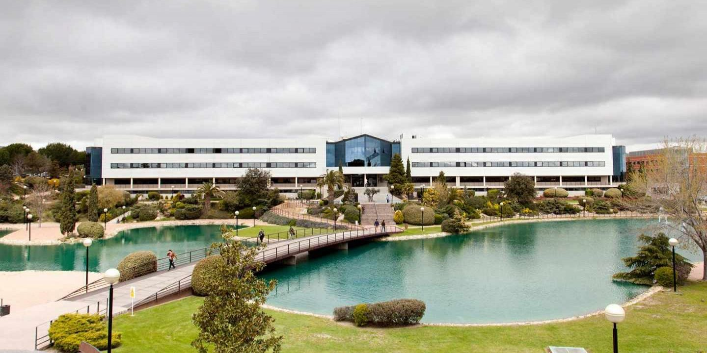

Tips para nuevos estudiantes UEM
Aquí vas a poder encontrar todo lo que necesitas para empezar con buen pie en la universidad.
En el índice encontrarás todos los temas que trato en la web, simplemente picha en el enlace para
viajar a cada sección.
Sobre mí...
Soy alumno de la UEM, actualmente curso tercero en el Grado de Ingeniería Informática. LLevo ya 3 años
aquí y he estudiado en los dos campus de la UEM en Madrid, el de Alcobendas y el de Villaviciosa, por lo que considero
que tengo una gran experiencia en diferentes entornos universitarios. En mi primer año me hubiese gustado conocer algunas de las cosas que especifico en estos tips por lo que espero que los disfrutes.
Tip 1 - Trabaja desde el minuto 1.
La universidad cuesta mucho dinero y estás aquí para aprender.
Es fundamental trabajar desde el primer día y no dejar las cosas para el final, luego resulta muy
complicado revertir la situación. Lo digo por experiencia.
Tip 2 - Socializa.
En la universidad tendrás muchos compañeros por lo que es vital intentar llevarse bien con todos.
Hacer amigos es muy importante, no solo a la hora de trabajar en grupo (lo cual es muy habitual), sino también
por el mero hecho de acudir a clases y pasartélo bien.
Tip 3 - Aprovecha las facilidades del campus.
Este campus es maravilloso, aprovéchalo.
Las facilidades que te proporciona la universidad son incontables, desde instalaciones repletas de instrumentos útiles
hasta por la infinidad de programas, licencias y entornos a los que puedes acceder gracias a ella. Los laboratorios, las
aulas y hasta las propias instalaciones más cotidianas (cafeterías, baños, jardínes) te aportarán total comodidad. Este campus
es un regalo que no muchos pueden tener así que lo mejor será usarlo como es debido.
Tip 4 - Intenta ir presencial.
La universidad es flexible, puedes acudir presencial u online. Intenta siempre ir de forma presencial.
Se que es muy sencillo quedarse en casa y dar las clases online pero debes de hacer el esfuerzo
de acudir a la universidad, no solo por el hecho de que gozas de unas instalaciones increíbles sino
porque aprendes bastante más. Es un gran esfuerzo que creo que a la larga tiene su recompensa.
Más información...
Puedes consultar la página web de la propia universidad por si te sirve de ayuda. Haz click
en el logo para acceder.